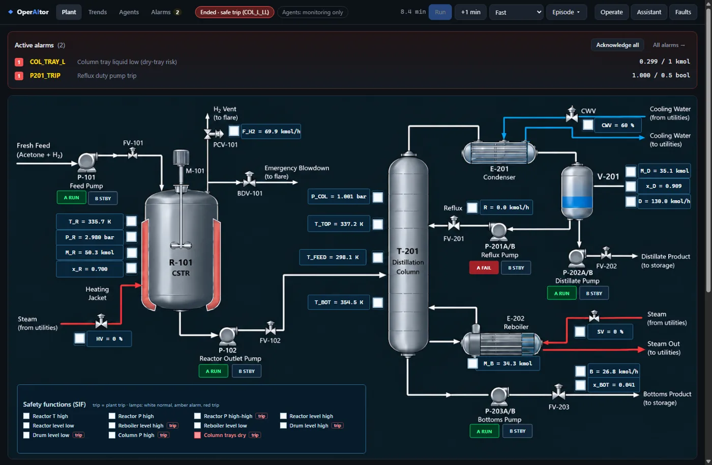

AI operators for process plantschecked before they act.
An open framework for AI operator agents: they detect a fault, diagnose it and fix it, and every action is validated before it touches the process. Try it on the demo plant: break it on purpose.
- Free and open source
- Runs on your own computer
- Your AI key stays in your browser

The demo plant that ships with OperAItor: a simulated acetone process, an endothermic reactor (isopropanol → acetone) feeding a distillation column.
A framework for operator agents, and a demo plant to put them to the test.
The demo plant: made to be broken
A dynamic simulation of an acetone process, with physics: control loops, duty/standby pumps, alarms and 11 independent safety functions.
Fault detection that watches everything
PCA checks every reading against normal operation; rule checks and an LLM diagnosis rank the causes.
AI operator agents
Diagnose, plan and propose concrete commands.
START_SPARE · reflux pumpChecked before they act
A digital twin, an LLM judge or the ADMIT gates.
Or take the controls
Handle the same faults yourself and compare.
From alarm to action, in six steps.
Every action files a record. Every record is checked.
T0The record is complete and validT1Cited evidence exists, is trusted and freshT2The active hazard is addressedT3Authority, operating mode and procedure stepsT4Projected on the plant, it stays inside the safety limits
start_standby_pumpReflux pump trip: switch to the healthy standby, P-201B- Evidence cited
- pumpsPCAalarmsknowledge graph
- Hazard
- Column trays running dry
- Authority
- Operate equipment
- Procedure
- Verify the pump has failed ✓
- Confidence
- 0.85 needs 0.50
T0Record completepassT1Evidence trusted and freshpassT2Hazard addressedpassT3Authority, mode, procedurepassT4Projected 30 min on the plantpass
Bring your own agents. Same faults, same score.
20 fault scenarios with fixed onset and lift times, and one score: operating margin plus inventory, minus a penalty when the plant stops. Every pipeline handles the same faults.
- Pick a baselineRun one of the five as it is, or customise it: settings, prompts, your own knowledge graph, Python detectors and validators, even the order of the steps.
- Connect your modelA free Groq, Gemini or OpenRouter key, your own Ollama, or OpenAI. The key stays in your browser.
- Run the benchmarkAgents → Customise → Benchmark: 3 scenarios for a quick look or all 20, each scored next to the reference runs below.
Have a model of another process? Contribute a plant model: we integrate new plants together with their authors, and their faults join the benchmark.
The original study. A starting point, not a leaderboard.
One run per configuration with gpt-5-nano, on an earlier version of the demo plant. These are the runs we report in our paper; your runs are compared with them scenario by scenario.
Full table and notes
| Configuration | Plant stops / 20 | Saving vs no agents | Time per decision |
|---|---|---|---|
| No agents | 18 | — | — |
| LLM, no validation | 9 | $179k | 21 s |
| LLM + LLM judge | 11 | $135k | 29 s |
| LLM + digital twin | 5 | $260k | 167 s |
| LLM + ADMIT, with simulation (T0–T4) | 6 | $237k | 143 s |
| LLM + ADMIT, no simulation (T0–T3) | 5 | $259k | 42 s |
gpt-5-nano, one run per configuration, on the plant before version 1.1 (setpoint limits and the steam valve changed since). The consequence gate (T4) blocks actions that would only delay an unavoidable trip, an open design question for admissibility gating. Every run and record is in the benchmark dashboard.
Run it on your own computer. Free.
Desktop app
Windows, macOS and Linux. It runs on your computer and opens the console in your browser. No admin rights needed.
Download for WindowsAlso for Windows · macOS · Linux
macOS: Apple silicon (M1 or later). Linux: x86-64. Portable zip and wheel on the releases page.
Your computer asks if you trust it?
The app is new and not code-signed, so browsers and your system ask you to confirm once. It is safe to keep.
- Edge: on the download, choose … → Keep → Show more → Keep anyway.
- Chrome: choose Keep in the downloads bubble or on
chrome://downloads. Until then the file is namedUnconfirmed ….crdownload. - Firefox: in the downloads list, choose Allow download.
- Windows (“Windows protected your PC”): choose More info → Run anyway.
- macOS (“Apple could not verify…”): open the disk image, drag OperAItor to Applications and open it; choose Done, then System Settings → Privacy & Security → Open Anyway. Stop it with Quit OperAItor in the console.
- Linux:
tar -xzf OperAItor-*-linux-x86_64.tar.gz, then run./OperAItor/OperAItor.
Docker
Windows, Mac or Linux.
docker run -p 7860:7860 \ ghcr.io/aisl-at-imperial-college-london/operaitor
Then open localhost:7860.
Python 3.11+
For research and your own code.
pip install "operaitor[llm]" operaitor serve
Then open localhost:8001.
Connect a free model and let the agents act.
Your browser calls the provider directly. Your key never reaches the OperAItor server. Without a model, the plant, fault detection and safety functions all still work.
OperAItor is in beta. The demo plant is a simulation of a process plant, with physics: mass and energy balances, thermodynamics and kinetics, checked in CI (simplifications in the model scope). It can still contain bugs. If you find one, please report it: Feedback in the app, or report it on GitHub.